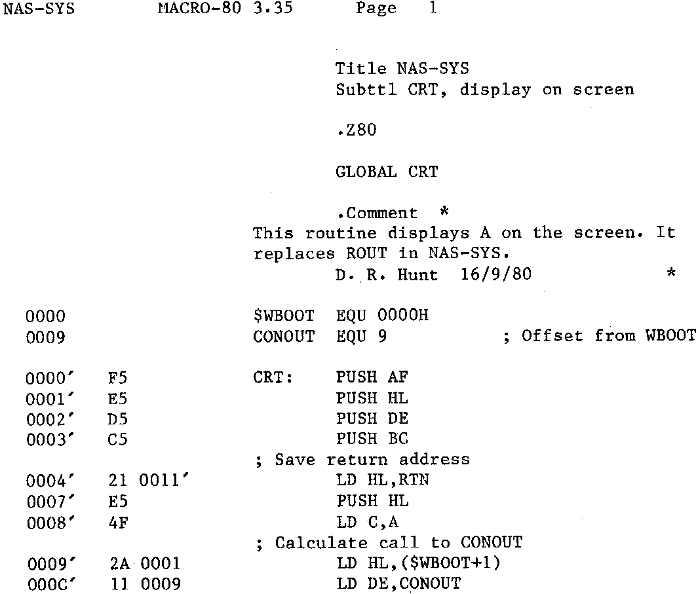

Not a bad little trick that, note the use of the warm boot jump to tell us
what size the CP/M system is. This little trick has other uses. For instance how about
a tape read routine in generalized Nascom format. The problems come thick and fast
with that one. The main problem is to duplicate TXl out of NAS-SYS. This is the one
that goes away, displays the header and checks the checksum. Because of the length of
the CRT routine it barely makes it at 2400 BAUD at 2MHz on a Nascom as it is. Now to
do the same thing under CP/M takes even longer, not only does the poor little byte to
be displayed have to fight its way through the CRT routine in CBIOS (thats already as
tortuous as the one in NAS-SYS), but it has to go through all the CP/M FDOS checks
first. Believe me, it only just makes it at 1200 BAUD at 4MHz with no wait states. So
how to bypass the FDOS (‘cos we already know the data is correct)? Well it would be a
simple matter to call CONOUT in the CP/M, the only trouble is, it moves about with
different size systems, so we have to find out where it is first. We already know
where the system is located because the warm boot jump at 0000H tells us, we also know
that CONOUT is offset from WBOOT by a fixed amount, so we can calculate its address.
Now to call it. We use what is known as a ‘fake call’. Find out where the routine is
to return to, push that location onto the stack and then jump to the routine, the
address of which we have just calculated. Having completed the routine, the RET at the
end pops the last address off the stack (as normal), and returns. Provided nothing
happened to upset the stack, this will be the return address. The CRT routine looks
like this:
